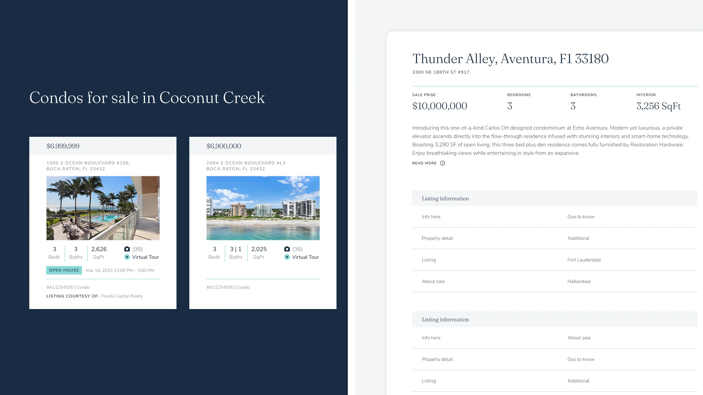
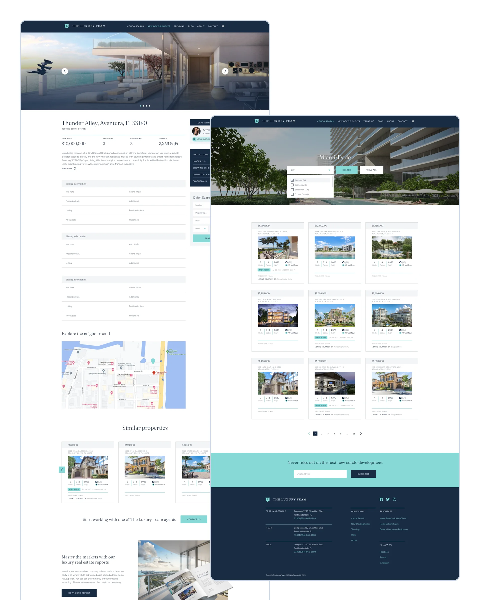
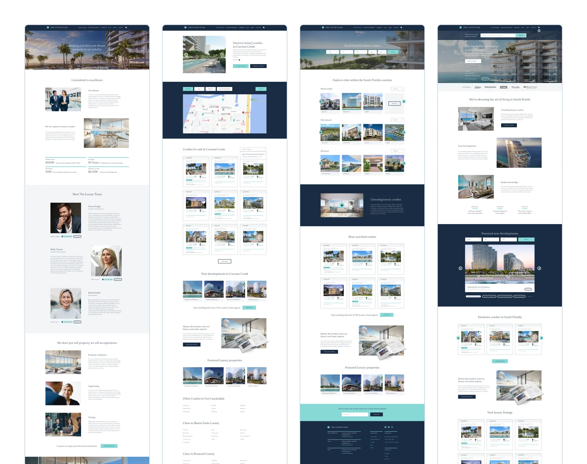
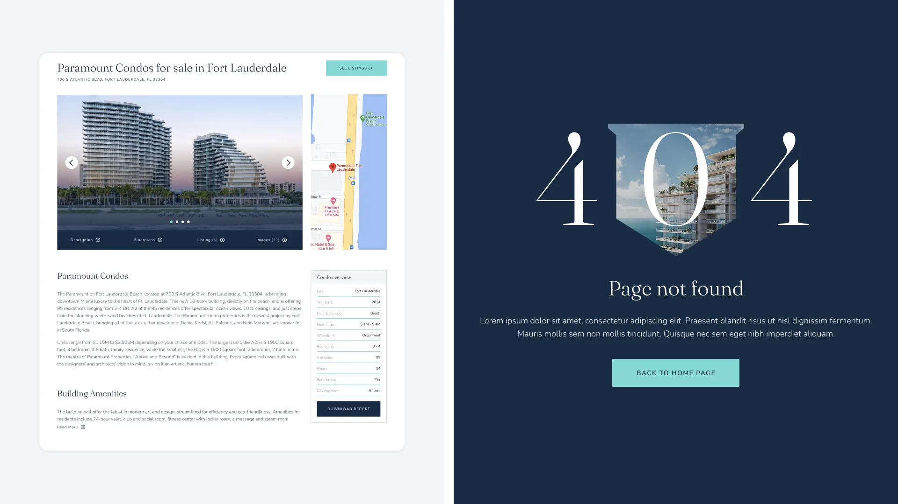

The Luxury Team · via NewDay agency · South Florida
Built around county market pages, not a flat listings grid
Rebuilding a luxury condo brokerage’s site around Palm Beach and Broward market pages, image-first property pages, and agent profiles.

Results
+40% inquiries
Measured after the redesigned site shipped, per the agency’s engagement report.
County market pages, not a flat grid
Palm Beach and Broward each get a geographic market overview, not a search box.
1 listing card, everywhere
Search results, city hubs, and similar-properties rails all read the same way.
Situation
The Luxury Team sells South Florida condos across Palm Beach and Broward counties. The old site treated every listing as a one-off page with no way to browse by market.
A buyer looking in, say, Palm Beach had no way to start there — only a flat search box and whatever the homepage happened to feature.
Deciding insight
Mapping inbound inquiries against the first thing each buyer mentioned on a call showed most of them already knew their target county before they ever opened the site — the site just gave them nowhere to start from that.
That reframed the IA around dedicated county pages — Palm Beach and Broward — each carrying a geographic market overview, backed by image-first property pages and agent profiles.
Research
Reviewed which counties drove the most inquiries and cross-checked that against how competing luxury brokerages structured market and property pages, to decide what a Palm Beach or Broward market page needed to carry, and settled on an image-first property page pairing the photo gallery with interactive details and a map.


Approach
Rebuilt the IA around dedicated county pages — Palm Beach and Broward — each leading with a geographic market overview, and built image-first property pages pairing the photo gallery with interactive details and a map, plus agent profile pages, all responsive across desktop, tablet, and mobile.
Unified the listing card across search results, county pages, and similar-properties rails, and gave even the 404 and empty states the same branded treatment as the rest of the site.


"They captured our vision for The Luxury Team perfectly, from the sleek, sophisticated design to the seamless user experience that reflects the high standards of our agency."